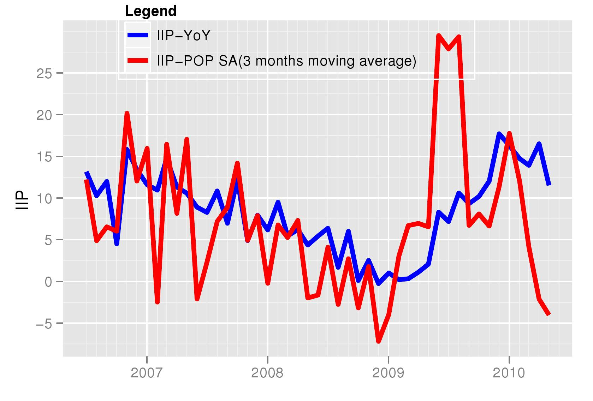
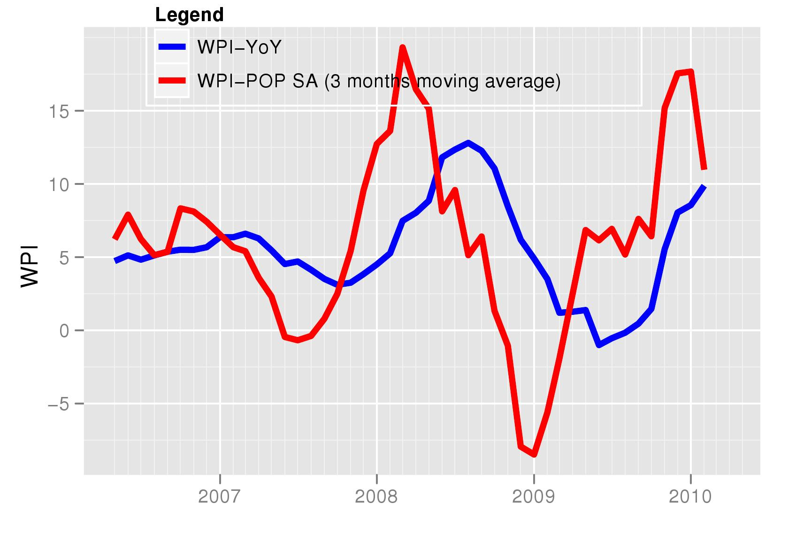
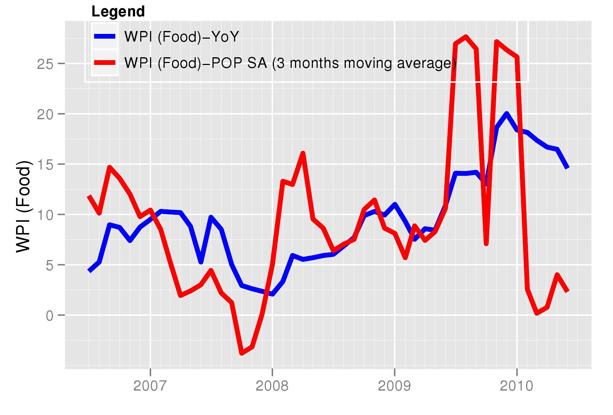
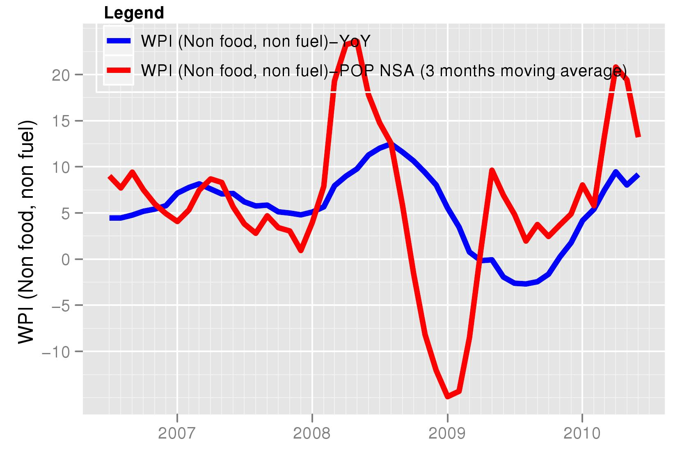

Really, the heat isn't on
Financial Express, 22 May 2010
The Indian economy has witnessed a sharp increase in output and prices after the global recession. Month after month for nearly ten to twelve months now, there have been reports of high and rising growth rates of industrial production and prices. This has led to the belief that the Indian economy has been overheating. We now look at the latest monthly data to examine whether the trend of rising growth rates will continue in coming months or will falter. Seasonally adjusted month on month data for both industrial production and prices suggest that growth and inflation is going to stablize in coming months.
Figure I shows the growth in the Index of Industrial Production (IIP). Seasonally adjusted data is sourced from the NIPFP-DEA program that tracks macroeconomic data for the Indian economy and makes it available at http://www.mayin.org/cycle.in/. The year on year growth, which is what is reported in media headlines, has been showing an upturn since the beginning of 2009. However, we need to remember that the year on year growth is the growth over the same month, twelve months ago. Thus, the yoy data misses out the trend of the latest few months. This can be captured by the month on month growth rate. But considering that these series suffer from seasonal fluctuations, it is important to first seasonally adjust them. The month on month rate is highly volatile and thus the growth rate series is smoothed by taking the 3 month moving average of the annualised rate. This rate is also shown in the figure. It shows that the acceleration that was seen in the first half of 2009, has now come down and there is a slowdown in the last 6 months. This deccelearation is going to get reflected in the year on year growth rate in coming months.
Figure 2 shows the inflation rate based on the WPI. Again, while the year on year growth rate still continues to show a consistent increase, the latest data for the month on month seasonally adjusted inflation rate shows that prices have stabilized and the growth in prices has come down. This suggets that after a few months, if this downward movement in month on month prices continues, we will be witnessing a reduction in the headline inflation rate (the year on year growth in WPI).

In Figure 3 and 4 we look at elements of the WPI. Food has contributed the most to the rise in inflation in recent months. Figure 3 shows the rise in food prices. While the year on year growth i.e food prices today compared to those 12 months ago, continue to show high numbers of above 15 percent, the latest trends are more optimistic. Indeed, WPI - food is now showing negative numbers,. i.e prices have fallen compared to last month. This decline will be reflected in the year on year food inflation rate in the coming months.
If we remove the most volatile elements of food and fuel from the wholesale price index, we get non-food, non-fuel WPI. Manufactured food products are also removed from WPI manufacturing. So products such as sugar are not included in this basket. This is the indicator the Reserve Bank of India has mentioned as rising and relevant for monetary policy recently. Again the upward trend in the year on year growth rate is likely to go away with the month on month inflation rate coming down.
The above form the basis on which decisions about rate hikes and monetary tightening would be made. If we were to merely watch the year on year growth rates we could come to erroneous conclusions that might suggest overheating in the economy. However, policy decision are now influenced by better data and the focus in India has now turned, as in the rest of the world, to understanding the latest trends by looking at month on month seasonally adjusted series. An encouraging recent development has been the inclusion of month on month seasonally adjusted inflation in RBI's latest macroeconomic analysis. The figures suggest that in the coming months the sharp increase in output and prices witnessed in the last quarter would be lower.

Back up to Ila Patnaik's media page
Back up to Ila Patnaik's home page